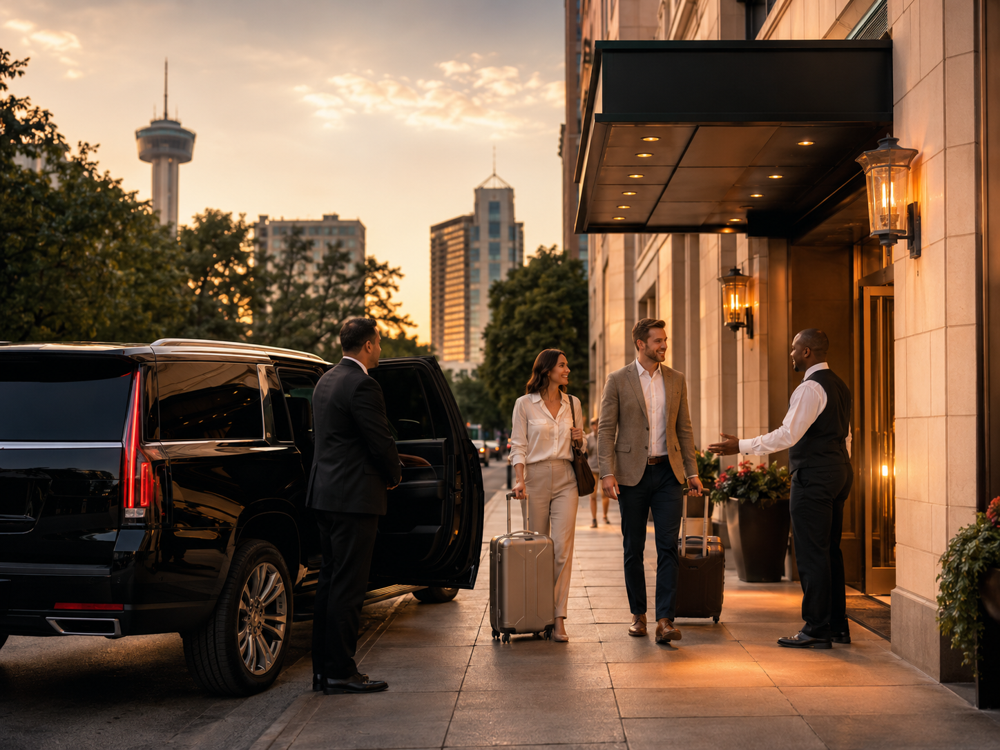

Airport arrival or departure
Flight timing, luggage, hotel/resort destination, and pickup/drop-off planning.
Built by The AI Plug
Transportation + Concierge
Airport arrivals, resort nights, River Walk dinners, convention traffic, family plans, and late-night returns all need different moves. Where To Go SA helps visitors think through the route and request transportation help when needed.
Request review and provider fit may vary. Where To Go SA is a visitor guide and request-routing resource, not an emergency transportation service.
Common visitor moves
Choose the situation closest to yours. Each one can start with route planning, then move into a transportation request if needed.
Flight timing, luggage, hotel/resort destination, and pickup/drop-off planning.
JW Marriott, La Cantera, Hyatt Hill Country, River Walk, Pearl, restaurants, and return timing.
Dinner, drinks, walkability, pickup spots, late-night return, and group movement.
Downtown hotels, convention center, Pearl, steakhouses, timing, and client dinner moves.
Kids, luggage, strollers, group size, timing, and simple route planning.
Safe timing, pickup areas, surge awareness, and realistic next steps.
New Braunfels, Fredericksburg, Hill Country, outlet trips, wineries, attractions, and longer route planning.
When visitors know the destination but not the best plan.
Plan before the ride
Visitors may need a quick route tip, a timing recommendation, a rideshare strategy, a resort/downtown plan, a group option, or a provider referral. Where To Go SA helps organize the request before anyone wastes time guessing.
What are you trying to do?
Pickup area, destination, group size, luggage, and timing.
Now, later today, scheduled date, airport/resort/downtown context, and party needs.
Advice, rideshare tip, concierge help, provider request, or partner referral.
If transportation help is needed, the request becomes a structured lead.
Transportation Operator
Tell us where you are, where you are going, and what kind of help you need. The operator helps narrow the route before you send a request.
Route help · ready

Quick prompts
Pick a prompt or describe your move in your own words. Contact details are collected only in the request form below.
Start here
Start with where you are, where you are going, when, group size, and whether you need advice only or a transportation request.
Follow-up
Transportation request intake
Share the route details and we’ll review the best next step. Availability, pricing, provider fit, and timing are not guaranteed.
Best requests answer: where are you, where are you going, when, how many people, and which situation applies: airport, resort, downtown, convention, night out, family, event, or day trip. Then tell us whether you need advice only, provider options, or concierge routing.
Routing / review
Pickup area, destination, timing, group size, and trip type.
Advice, rideshare guidance, provider option, partner referral, or follow-up.
Requests may be routed based on timing, fit, availability, provider type, and compliance.
If follow-up is available, we use the contact method you provided.
Provider / partner opportunity
Where To Go SA uses this page as a live example of visitor route help and structured request intake. Transportation providers and concierge businesses can use the same practical AI systems for local SEO, route-specific landing pages, Google Ads or paid campaigns when appropriate, group transportation request funnels, concierge request content, AI-assisted route questions, intake, provider handoff, and follow-up — built by The AI Plug. Availability, bookings, and ad results are not guaranteed.
Where To Go SA is a visitor guide and request-routing resource. Submitting a request does not guarantee transportation, driver availability, pricing, provider acceptance, pickup time, or service. If timing is urgent, use Uber, Lyft, hotel transportation, taxi, or another licensed option.
Transportation + Concierge
Start with the route plan, then send a structured request if you need transportation help reviewed.